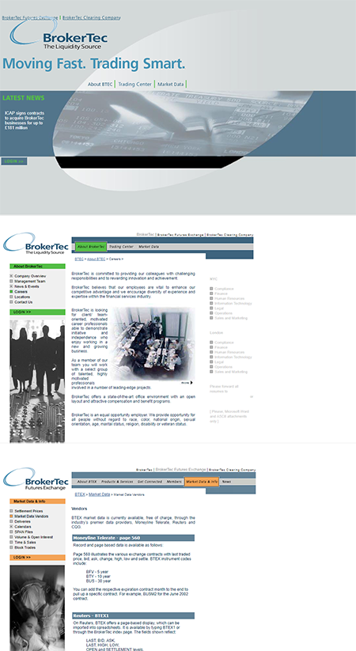

More than twenty permission categories
The number of roles created many possible combinations of information, access, and responsibility.
Compact case · BrokerTec
More than twenty permission categories shaped what different users could see. The challenge was not simply organizing information; it was maintaining a growing repository while presenting role-appropriate information through shared pages.
Context
BrokerTec was a fixed-income trading platform created by ICAP, Merrill Lynch, and other participants in the financial industry. My work centered on tools for business users and the information structures supporting them.
I gathered requirements, produced functional flows and wireframes, secured stakeholder approval, and then translated approved designs into working interfaces. Information architecture and implementation were parts of the same role.
01 · The design problem
Most sections were shared by many permission groups, but the information and actions available within those sections could differ. Access was therefore not a final security layer placed on top of the design; it affected the page structure itself.
The number of roles created many possible combinations of information, access, and responsibility.
Multiple audiences used the same broad areas, so pages had to accommodate role-specific information without becoming separate sites.
Creating, maintaining, documenting, and progressively organizing the repository was an ongoing IA problem rather than a one-time sitemap exercise.
The same page did not mean the same experience.
Role and permission determined what information a user could see. The interface had to remain coherent even when its contents changed by audience.
02 · Design to implementation
Because the role included front-end development, the design process stayed closely connected to feasibility, data behavior, and production constraints.

The value was not merely knowing both design and code. It was being able to discover implementation consequences while the interaction was still being shaped.
03 · Early data delivery
BrokerTec used WDDX—an early web data-exchange format—to present a fifteen-minute delayed ticker and support classified information for different audiences within the same page structure.
Structured data delivery made the page less static. Information could be updated and varied without rebuilding an entirely different page for each group.
The technical mechanism and the information architecture were connected: the data format helped make role-sensitive presentation practical.
WDDX used XML to move structured data between systems. In this project, it supported a form of dynamic, data-driven presentation before the patterns now associated with JSON-based applications became commonplace.
What the work left behind
The surviving material is limited, but it still supports a distinct contribution at the intersection of information architecture and implementation.
Case takeaway
BrokerTec joined information architecture, permissions, structured data, and front-end implementation. The result was a shared system capable of presenting different information to different users without fragmenting into unrelated experiences.
This is intentionally a compact case: one distinctive problem, the evidence that survives, and a clear account of what the work demonstrates.